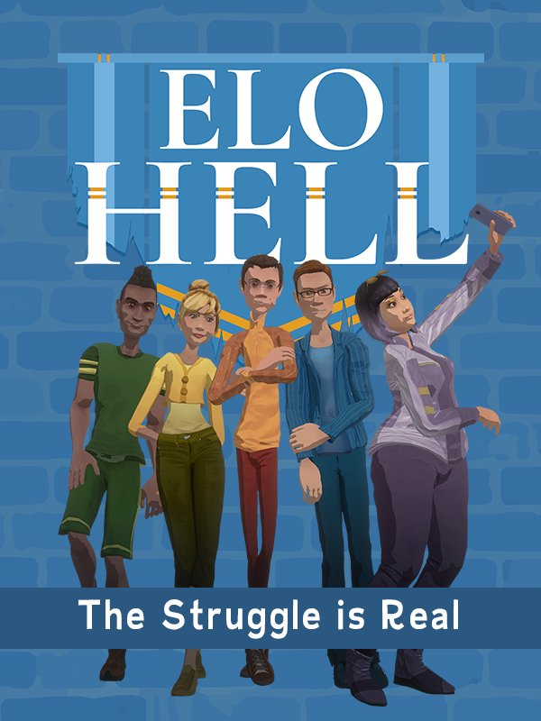

Elo Hell
Elo Hell
Details
|  | |
| Playtime | Not Played |
| Last Activity | Never |
| Added | 21/04/2020 |
| Modified | Never |
| Completion Status | Not Played |
| Source | Steam |
| Platform | PC |
| Release Date | 30/07/2019 |
| Community Score | 55 |
| Critic Score | |
| User Score | |
| Genre |
Action Adventure Indie Strategy |
| Developer |
Exato Game Studios |
| Publisher |
Exato Game Studios |
| Feature |
Cloud saves Single Player |
| Links |
PCGamingWiki Community Hub Discussions Guides Store Page News |
Description
Elo Hell is a one-of-a-kind experience that blends the storytelling of
Telltale Games (RIP), the strategy of Starcraft, and the
minigames of Mario Party, into one seamlessly unique
experience.
This light-hearted, but mature coming of "games" comedy puts you in the shoes of Chance Betzinger as he lives his life, beginning as a senior in high school. Slowly he'll discover his skill as a potential professional gamer as he grinds through the hit new game, Echo Star. In the meantime, he'll go on adventures, make tough choices, and just hang out with his friends.


All of these combine to create a gaming experience like you've never seen. Try Elo Hell for free!
GLHF scrubs
This light-hearted, but mature coming of "games" comedy puts you in the shoes of Chance Betzinger as he lives his life, beginning as a senior in high school. Slowly he'll discover his skill as a potential professional gamer as he grinds through the hit new game, Echo Star. In the meantime, he'll go on adventures, make tough choices, and just hang out with his friends.
-
Play Chance "Betz" Betzinger as he climbs to Challenger
in the hit new game, Echo Star.
-
Choice-driven dialogue where your decisions impact the greater
story.
- Create Chance's gamer profile through how he trash talks, how good of a sport he is, and how hype he can be.
-
For each of the 10 episodes of Elo Hell, you'll get 100% unique,
never-repeated minigames.
-
From rhythm games to a pixelated space-math game, you never know
what you'll get.
- We pay homage to some of the greatest and most unique game design mechanics in all of gaming (not just including video games)
-
Echo Star is a turn-based strategy game, inspired by the greatest
RTS game of all-time: Starcraft.
-
You'll experience unique challenges every episode that put
your skill to the test.
- Every episode comes with 5 unique "Trials" to improve your Echo Star skills.
All of these combine to create a gaming experience like you've never seen. Try Elo Hell for free!
GLHF scrubs